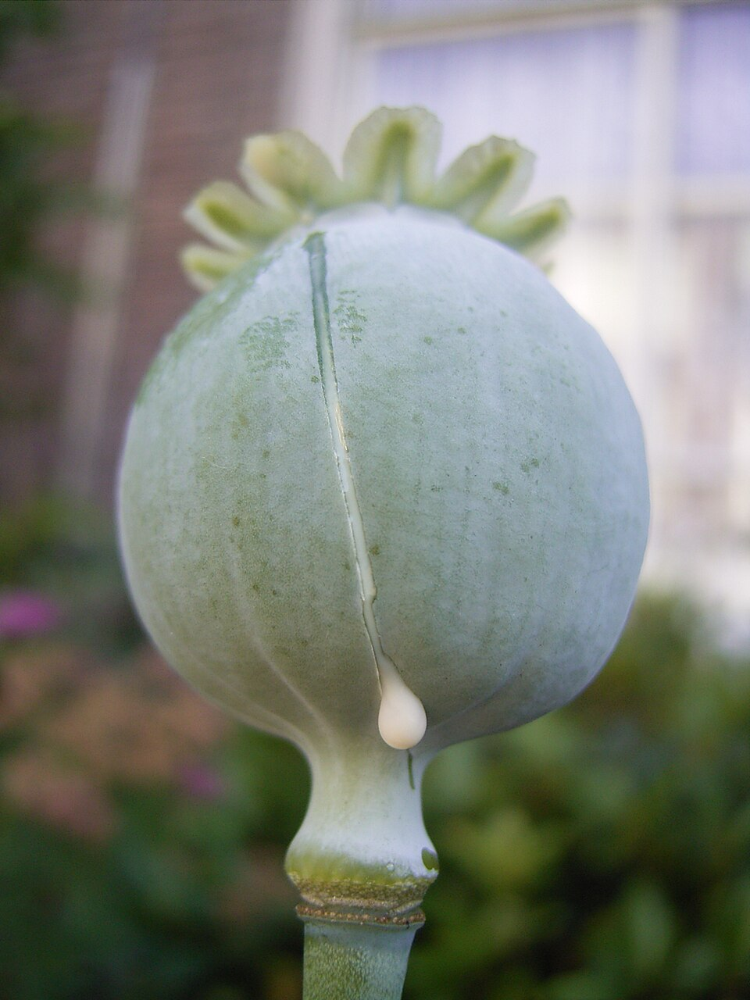
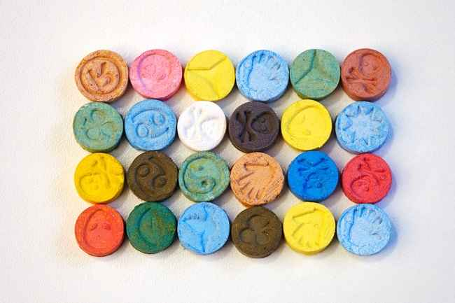
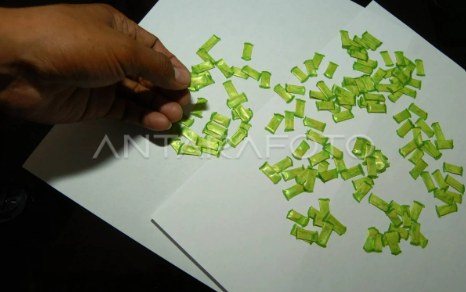

Gallery

Opium
Gambar ini menunjukkan opium mentah dari tanaman poppy. Pada era kolonial (1600–1942), opium dijadikan komoditas legal melalui monopoli pacht opium.

Heroin
Gambar heroin berbentuk bubuk. Pada 1970–1980-an, Indonesia mengalami gelombang narkoba modern seperti heroin dan putauw.

Sabu
Sabu atau methamphetamine menjadi narkoba yang paling banyak disalahgunakan pada 2000–2010.
Amfetamin
Obat berbahan dasar amfetamin yang pada 1970–1980-an banyak disalahgunakan sebagai stimulan.

Ekstasi
Pil ekstasi yang marak beredar pada 1990–2000 terutama di kota-kota besar.

Putauw
Putauw, versi murah dari heroin, banyak menyebabkan ketergantungan berat pada 1970–1980-an.